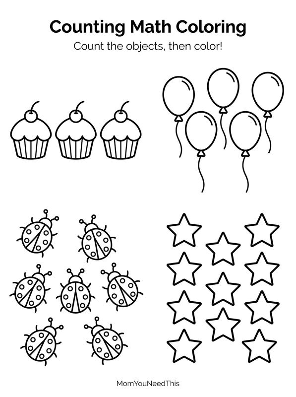
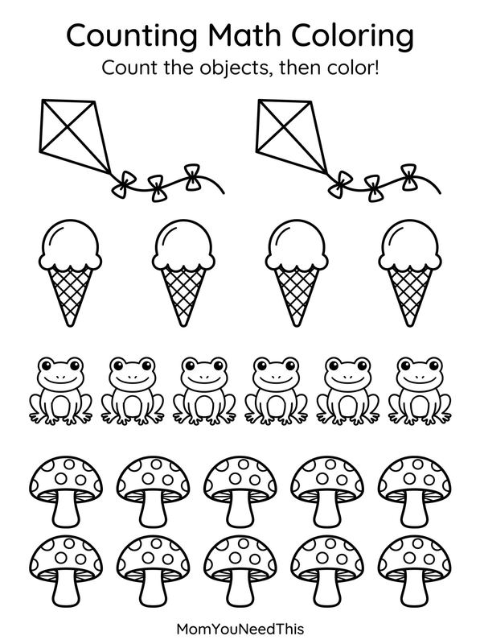
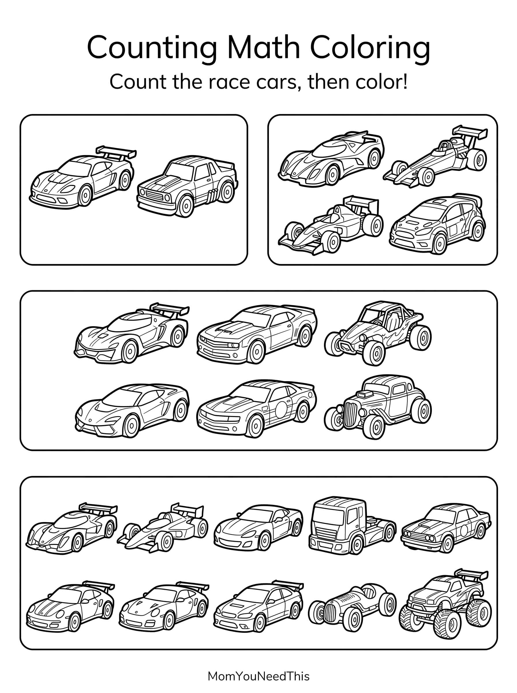
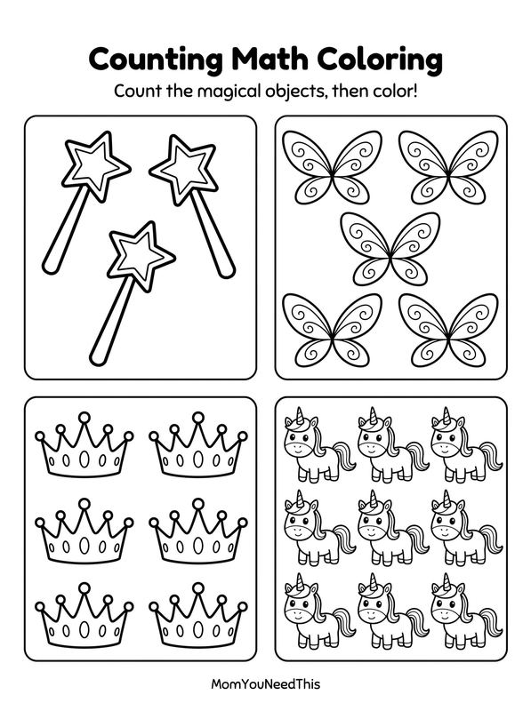
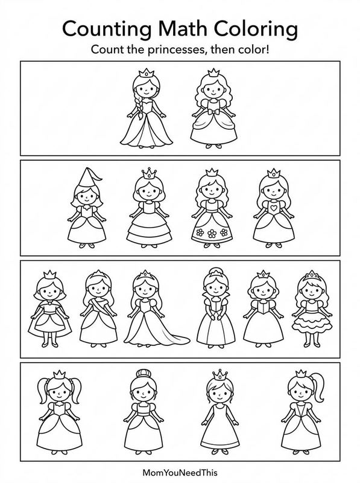
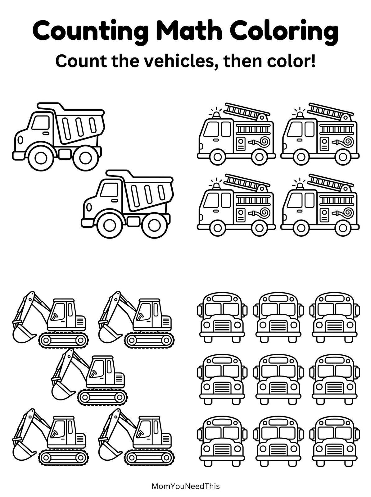

Math Coloring Pages Fun Early Math Learning For Toddlers & Preschoolers
This free printable math coloring pages gives toddlers and preschoolers a fun, no-prep way to build creativity and fine motor skills. Just download, print, and let them color. Each sheet is one of our preschool math activities worksheets — count first, then color.

Counting Math Coloring Pages
Count cupcakes, balloons, ladybugs and stars, then color them in!
⬇️ Download Counting Math Coloring Page

Counting Math Coloring Fun
Count kites, ice cream, frogs and mushrooms, then color them in!
⬇️ Download Counting Math Coloring Fun

Counting Math Coloring: Fast Cars
Count the speedy race cars, then color them in!
⬇️ Download Fast Cars

Counting Math Coloring: Magical Fun
Count the magical pictures, then color them in!
⬇️ Download Magical Fun

Counting Math Coloring: Princess
Count the pretty princess pictures, then color them in!
⬇️ Download Princess

Counting Math Coloring: Vehicles
Count the vehicles, then color them in!
⬇️ Download Vehicles
➕ How To Use This Printable
- Download and print the coloring page on letter-size paper — print a few extras so there is no fighting over favorites.
- Set out crayons, markers, or colored pencils and let your child choose their colors.
- Color together or side by side, chatting about the pictures as they come to life.
- Show off the masterpiece on the fridge or in a learning binder to celebrate the effort.
Why Math Coloring Pages Help Kids Learn
Math coloring activities combine creativity with early learning. Children practice number sense, counting, patterns, shapes, and problem-solving while developing focus and fine motor skills. Each page works as one of the gentlest math worksheets for preschool: count the objects, then color them in.
🔢 More Early Math Activities
Continue learning with number coloring pages, counting worksheets, tracing activities, patterns, shapes, and other preschool math resources.
🔢 Number Coloring PagesMore Free Kids Resources
Explore alphabet activities, educational coloring pages, preschool worksheets, and printable resources designed for toddlers and young learners.
🎁 View All Free Resources❓ Math Coloring Pages FAQ
Is this math coloring pages printable really free?
Yes — this math coloring pages printable is 100% free to download and print at home. No signup and no payment needed. Just tap the download button and print as many copies as you like.
What ages is this printable best for?
It is made for toddlers and preschoolers. Little ones can enjoy it with a grown-up’s help, while older preschoolers can work on it more independently.
What should we color with?
Crayons, washable markers, or colored pencils all work great. For young toddlers, chunky crayons are the easiest to grip.
Are math coloring pages good math activities for preschoolers?
Yes — counting and coloring go together here: your preschooler counts the objects on each page and colors them in, building number recognition while they play.
🔗 More Free Printables You’ll Love
- Free Alphabet Coloring Pages Free printable alphabet coloring pages for little learners.
- Free Letter B Coloring Pages Free printable letter b coloring pages for little learners.
- Free Letter C Coloring Pages Free printable letter c coloring pages for little learners.
- Free Mermaid Coloring Pages Free printable mermaid coloring pages for little learners.